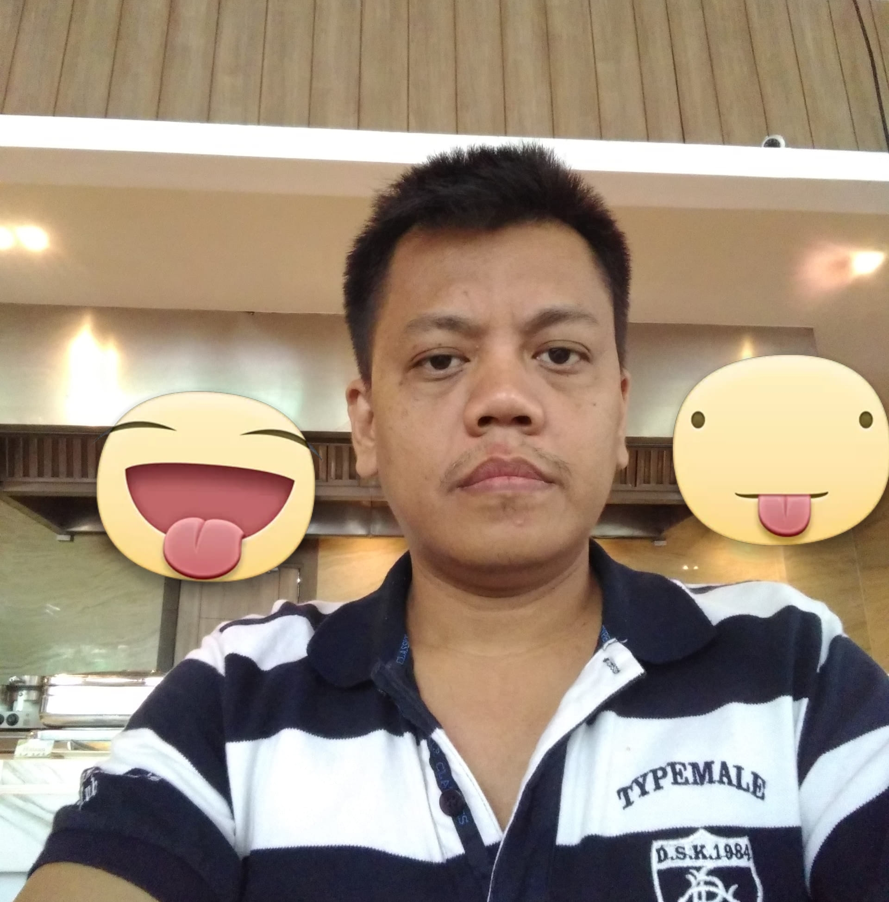
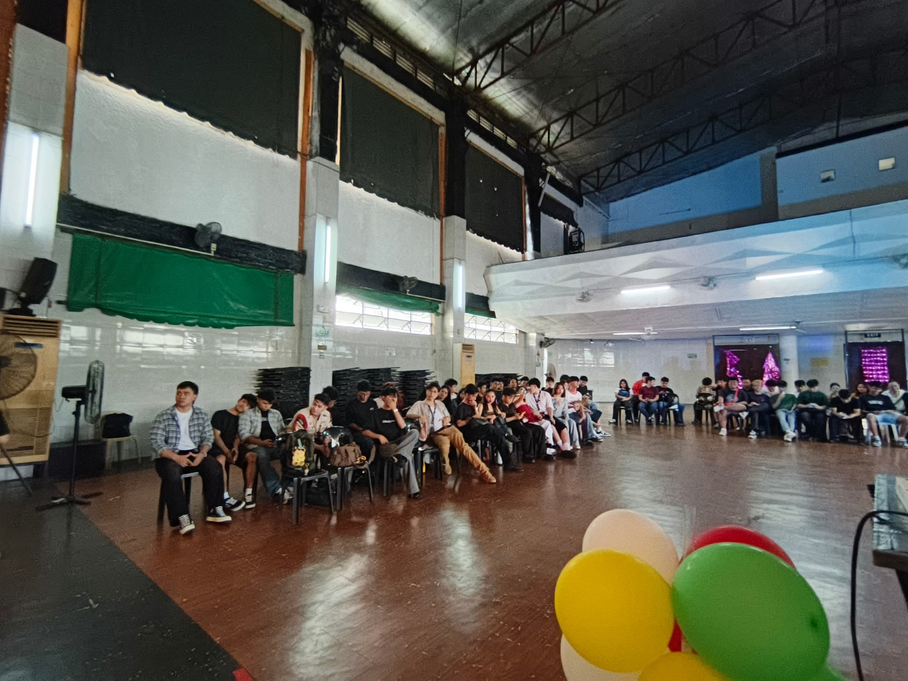
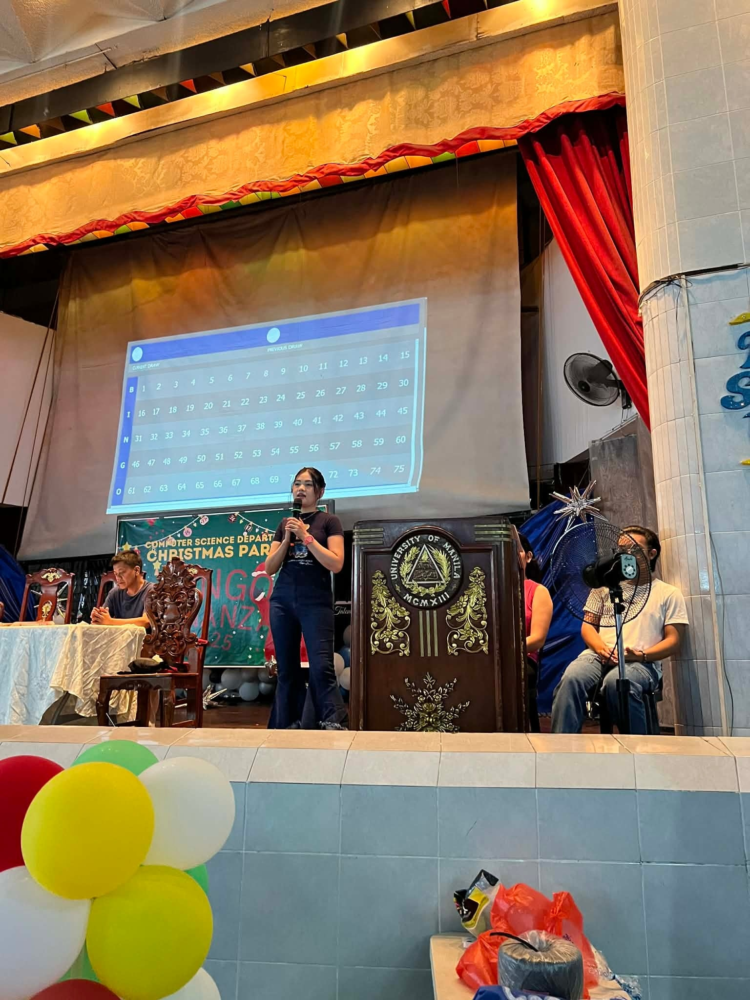
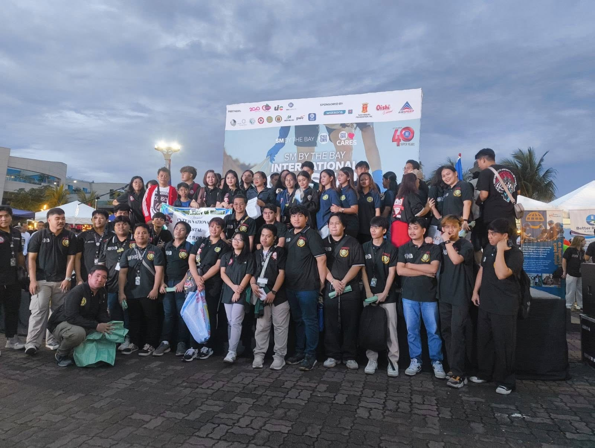
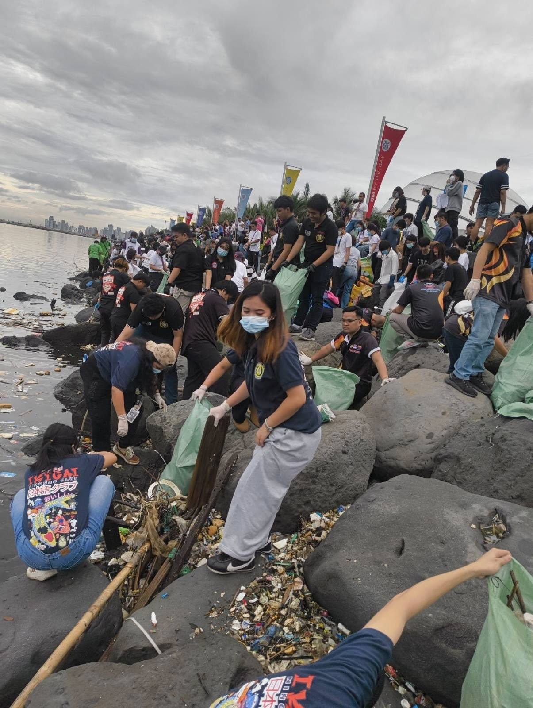
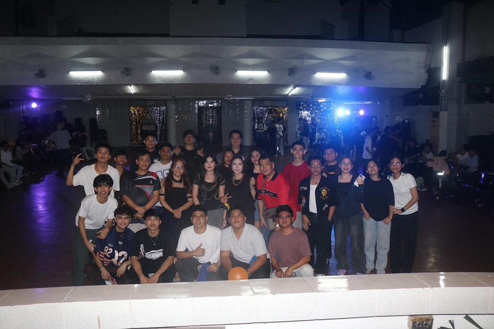

This is a page about the history, the faculty, and events of University of Manila's Computer Science Department.
Faculty
The faculty members of the Computer Science department are highly qualified and experienced in their respective fields. They are dedicated to providing quality education and mentorship to students.
Professor Joselito Borces
Professor Marjorie Borces

Professor Rogelio Plaza

Professor Stanley Verde

Professor Rochelle Anne Fallorina

Professor Ervin Ramos
CS Event(s)
The Computer Science department regularly organizes events to foster friendship and camaraderie among students.
Computer Science department's 2025 Christmas Party.

5 lucky raffle winners of the Computer Science department's 2025 Christmas Party.


A photo of Professor Fallorina during the Computer Science department's 2025 Christmas Party.
On September 20, 2025, the University of Manila actively participated in the International Coastal Clean-Up Drive held at By the Bay.
A total of 71 participants—composed of faculty members, non-teaching staff, and students from the Colleges of Computer Science, Japanology, and Foreign Service—volunteered their time and effort for this meaningful environmental initiative.



BSCS Acquaintance Party 2025
Here’s the last set of snaps from our unforgettable night last August 23, 2025.


